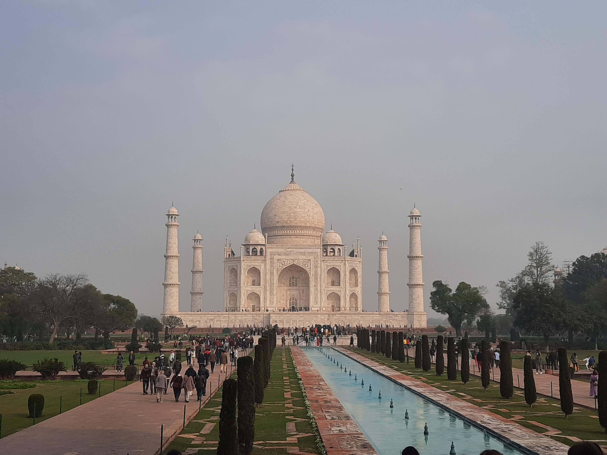

Go Back
A Day in Agra

Agra is a city in India most famous for being the location of the Taj Mahal. Agra is located in North India a few hours south of New Delhi. When I visited I took a night bus from Varanasi and arrived around 6 in the morning. I spent about 7 hours in the city before taking another train to Jaipur. It was a lot of train travel but I decided it was the best way for me to fit it into my itinerary. Many people choose to spend a night or a few here to get to better explore the city. I've heard many good things about the city itself but didn't really experience much other than visiting the two main sights. During my day trip in the city I visited the Taj Mahal (of course) and the Agra Fort. Here is my account of visiting Agra and it's two most popular sights.
The Taj Mahal is an islamic white marble mausoleum, one of the man made wonders of the world and probably the most recognizable sight in India. It looks picturesque in photographs but it truly is spectacular up close. In the photos you can't see the fine detail of the carvings in the white marble or truly appreciate the perfect symmetry of the building. It was commissioned in 1631 by the Mughal emperor Shah Jahan to house the tomb of his favourite wife, Mumtaz Mahal; it also houses the tomb of Shah Jahan himself. For foreigners it costs 1050 rupees to enter which is less than 15 usd. This is quite a good price considering the importance of this building. You'll see monkeys jumping around as you walk up to the main entrance. The security was quite strict when I visited (understandably so). I wasn't allowed to bring a deck of cards inside with me which happened to be in my backpack. This is no problem though because they do have storage lockers where you can leave your belongings and then retrieve them after spending a few hours inside. The Taj Mahal isn't the only building in the area. It's actually a 42 acre complex featuring a mosque and guesthouse. It's surrounded by a three sided wall and lies along the Yamuna River. This is the main reason why most tourists visit Agra and I can confirm that it's worth the trip. You won't see anywhere else like this. Near the Taj Mahal are many restaurants and souvenir stores where you can stop to have breakfast, lunch or do some shopping. I recommend trying a paratha with curd and spicy pickle. This was my favourite breakfast to have in India.
Agra fort is a historical fort in the city of Agra in India also known as red fort. It was built during 1565-1573 for Mughal Emperor Akbar. It was the main residence of the rulers of Sikarwar clan of Rajputs until mughals occupied it and Mughal Dynasty until 1638, when the capital was shifted from Agra to Delhi. It's more like a walled city and once you enter you can explore all the different buildings that are inside of the giant walls. It's close to the Taj Mahal, I walked to the fort in about 30 minutes I believe. You can actually see the Taj Mahal in the distance from the fort. Today it is a UNESCO world heritage site. The entry fee is 550 rupees which is about 6 usd and it's well worth it. The fort and buildings that constitute it are beautiful and there is a fascinating history to it. There are plenty of guides available at the front entrance if you want someone to explain about the fort as you go around. The guides are optional though if you prefer not to have one. After I finished at the fort I walked to the train station to catch my train onto Jaipur. Agra is certainly worth at least a day trip if not a few days.